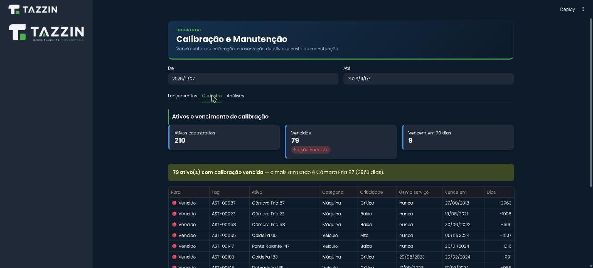
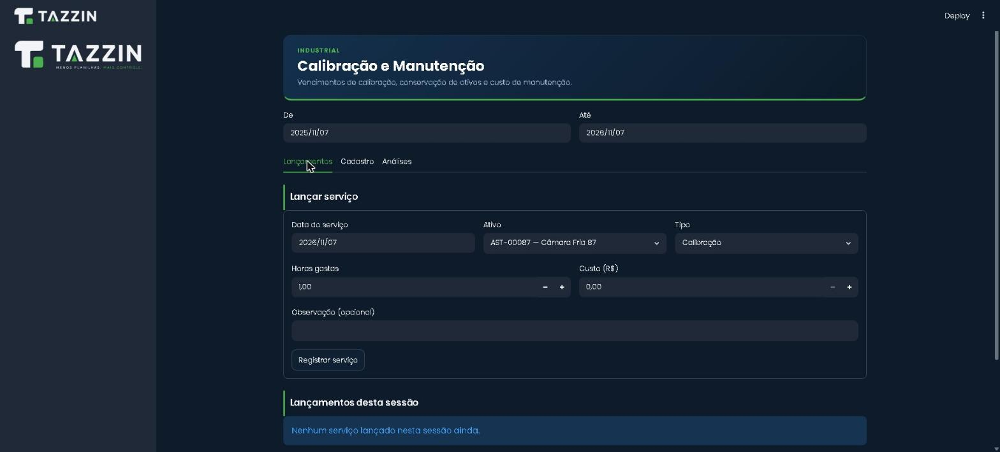
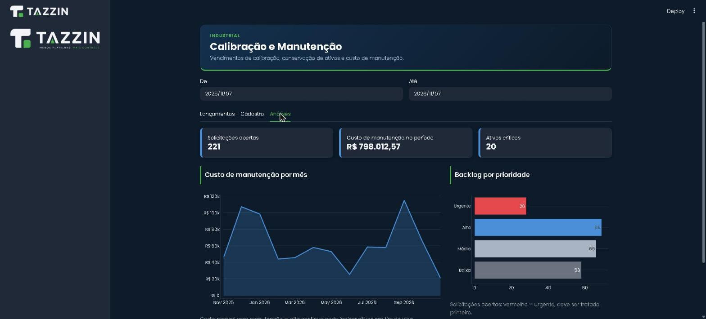

Instrumento de medição sempre em dia
Cada instrumento com local, responsável e histórico. O vencimento é calculado sozinho, o semáforo mostra o que exige ação hoje e o certificado fica à mão quando a auditoria chega.

Uma calibração vencida só aparece na hora errada
Quando o controle vive em planilha, papel ou na memória de quem cuida dele, o prazo é descoberto na auditoria, na reclamação de um cliente ou na hora de usar o instrumento.
Vencimento que ninguém vê
A data está em uma coluna, em um arquivo, com uma pessoa. Se ela estiver de férias, o prazo passa.
Instrumento sem endereço
Está na produção, no laboratório da empresa ou no fornecedor? Quantos dias já está fora? Quase ninguém sabe responder rápido.
Certificado difícil de achar
Na auditoria, a rastreabilidade (quem, quando, onde) precisa estar pronta. Procurar PDF em pasta compartilhada custa horas.
Simulação: cadastre, envie e receba um instrumento
Funciona de verdade neste navegador. Cadastre um instrumento, envie ao laboratório, registre o retorno e veja o vencimento e o tempo fora da empresa se atualizarem. Os dados iniciais são fictícios e nada sai do seu computador.
| Instrumento | Local · responsável | Criticidade | Última calibração | Próximo vencimento | Situação | Ação |
|---|
Histórico de movimentações (mais recentes primeiro)
O vencimento nunca é digitado, é calculado
A regra do módulo é simples e fica escrita no código, com testes. Quanto mais crítico o instrumento, mais curto o ciclo. Os intervalos abaixo são a convenção da demonstração; em um cliente real, eles vêm do plano de calibração da empresa.
- Verde (em dia): faltam mais de 30 dias.
- Amarelo (a vencer): faltam 30 dias ou menos.
- Vermelho (vencido): a data já passou.
| Criticidade | Intervalo |
|---|---|
| Crítica | 6 meses |
| Alta | 12 meses |
| Média | 18 meses |
| Baixa | 24 meses |
As três telas do módulo
Capturas da plataforma Tazzin rodando com dados fictícios.
O módulo de Calibração e Manutenção já existe na plataforma, mas ainda não aparece no menu da demonstração pública. As imagens abaixo vêm da execução do módulo em ambiente local, com dados fictícios.


O que já funciona e o que construímos para a sua empresa
O módulo é o ponto de partida. A rotina de cada empresa define o resto.
Já funciona na plataforma
- Cadastro do equipamento com tag, local e criticidade
- Vencimento calculado pelo último serviço e pelo intervalo
- Semáforo: em dia, a vencer em 30 dias, vencido
- Lançamento de serviços e painéis de análise
Construímos para a sua rotina
- Responsável por instrumento e perfis de acesso (consulta, lançamento, administração)
- Movimentações com data de envio, conclusão e retorno, sem apagar o histórico
- Certificados anexados à ficha, com busca por tag, laboratório ou período
- Alertas por e-mail para vencimentos próximos e atrasos
- Tempo de cada calibração e tempo total fora da empresa
- Localização por setor ou unidade, quando o instrumento circula
Perguntas frequentes
Preciso trocar o ERP ou o sistema da qualidade?
Não. O módulo roda ao lado do que você já usa. Quando o ERP tem API, os dados de equipamentos podem ser lidos de lá; quando não tem, o cadastro inicial vem das planilhas atuais.
Como os dados das planilhas atuais entram no sistema?
Fazemos o cadastro inicial a partir das planilhas, conferindo duplicidades, tags e datas com quem conhece os instrumentos. Depois, o laboratório de qualidade registra cada passo direto na ferramenta.
Onde ficam os certificados de calibração?
Anexados à ficha de cada instrumento, com data, laboratório e número do certificado, para consulta rápida por tag, laboratório ou período. Onde os arquivos ficam guardados (servidor próprio ou nuvem) é definido com a sua equipe de TI.
E a LGPD e a segurança das informações?
O sistema guarda poucos dados pessoais (nome e função do responsável). O acesso é por login e perfil, e o histórico registra quem alterou o quê. O desenho de backup, hospedagem e permissões é combinado antes de começar.
Quanto tempo leva para colocar em uso?
Depende da quantidade de instrumentos e da organização das planilhas atuais. Para um escopo como o descrito aqui, o caminho típico é: levantamento e cadastro, depois movimentações e certificados, depois alertas e indicadores, depois treinamento. Combinamos prazo e entregas por etapa, depois de entender o seu cenário.
Quer ver isso com os seus instrumentos?
Conte como o controle funciona hoje. Respondemos com uma ideia de por onde começar.